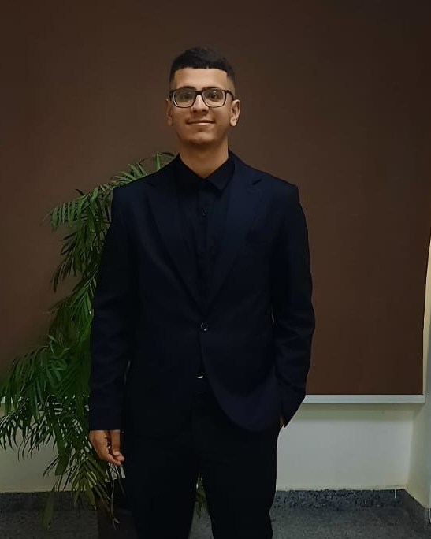

CYBERSECURITY
- SOC Fundamentals
- Defensive Security
- Security Monitoring
- Threat Awareness
- Troubleshooting
// hello, world
Computer Science student building hands-on skills in defensive security, threat detection and security monitoring. I enjoy turning curiosity about networks, operating systems and algorithms into practical, reliable work.

whoami.sh
I'm a Computer Science student at the Faculty of Computers and Information Systems, Egyptian Chinese University, with a growing focus on cybersecurity and SOC operations. My coursework covers networking, operating systems, algorithms, database systems and computer graphics, and it gives me the foundation to understand how systems work before learning how to defend them.
Outside the classroom I build my cybersecurity skills independently, working with Linux environments and Python, and I hold a RedHat certification. I'm a quick learner who is comfortable troubleshooting, working under tight deadlines and presenting ideas clearly to a team.
My goal is to start a career as a Cybersecurity Analyst in a Security Operations Center, where I can monitor, detect and respond to threats.
A hands-on build combining hardware and programming to design and control a robotic arm.
A hands-on build combining hardware and programming to create and control a moving robotic car.
Coursework and practice solving problems with algorithms and data structures in Python, with a focus on clean, maintainable code.
Independent practice in Linux environments and defensive security concepts, building toward a SOC analyst role.
Egyptian Chinese University · Faculty of Computers and Information Systems · Cairo, Egypt
Linux administration foundations.
Open to SOC Analyst, Junior SOC Analyst and Cybersecurity internship opportunities. Reach out below.